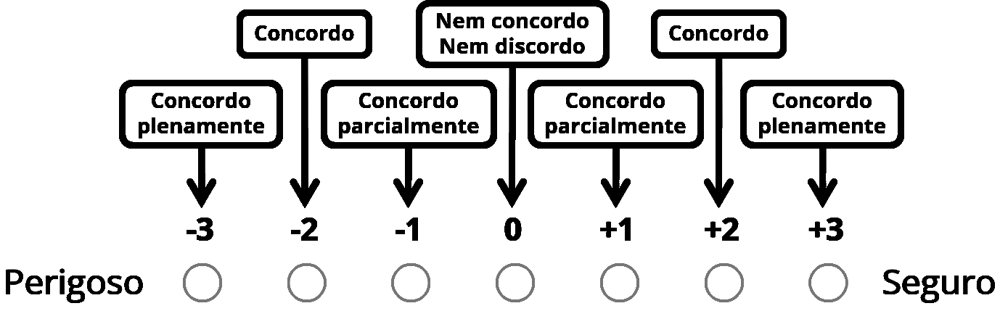

ORIENTAÇÕES:
Assista ao vídeo atentamente;
Responda o questionário conforme a figura a seguir mostra:

Cada questão traz um par de palavras. Para responder às questões, marque a posição de acordo com o grau de concordância com uma ou outra palavra que melhor descreve como você se sente em relação ao ambiente apresentado no vídeo.
Existem nove ambientes para avaliar. Avalie quantos quiser.
Ao enviar um questionário, outro será carregado automaticamente.
Não perca a oportunidade de contribuir com a pesquisa.
Avalie o máximo de ambientes que puder.